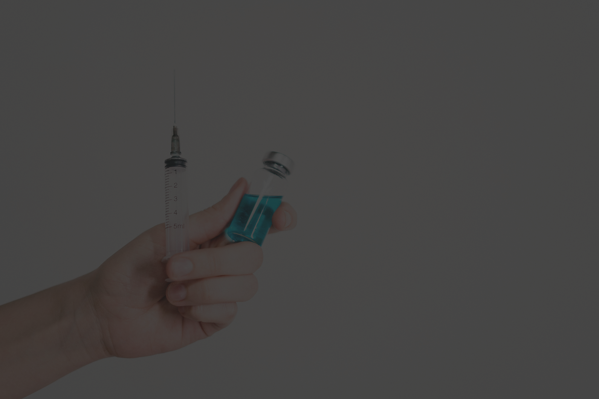

15 AGO 2025
5 hábitos para manter a saúde do coração em dia
A prática regular de exercícios, alimentação balanceada e consultas preventivascsão fundamentais para evitar doenças cardiovasculares, que seguem como uma das principais causas de morte no Brasil.
02 JUL 2025

Campanha de vacinação contra a gripe começa em setembro
A clínica dará início à campanha anual de vacinação, destinada a crianças, idosos e grupos de risco. A imunização é a forma mais eficaz de prevenção contra o vírus da gripe.
20 JUN 2025
Saúde mental: a importância do acompanhamento psicológico
O estresse e a ansiedade estão cada vez mais presentes no dia a dia. Ter apoio psicológico adequado pode ajudar na prevenção de transtornos e na melhoria da qualidade de vida.
05 MAI 2025
Novos exames de imagem com tecnologia avançada
A clínica ampliou sua infraestrutura com novos equipamentos de ressonância e tomografia computadorizada, oferecendo diagnósticos mais rápidos e precisos.